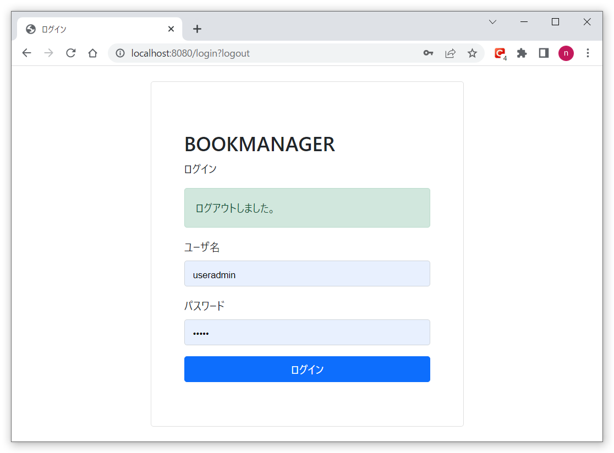

本を管理するWebアプリに、SpringSecurityを使用したログイン認証を実装
SpringSecurityを使用したログイン画面を実装します。DB認証です。
以下がログイン画面のレイアウトです。間違ったIDでログインします。
ログイン認証失敗として、エラーメッセージを表示します。
ユーザ名：「useradmin」、パスワード：[admin]を入力し、ログイン認証成功すると、本の一覧画面に遷移します。 ヘッダ部分にユーザ名を表示しています。ログアウトボタンを押します。
ログアウトすると、メッセージを表示し、ログイン画面に戻ります。
ソースファイルは以下からダウンロードして下さい。
ソースについて
Controllerクラスのログイン部分です。
package com.bookmanager.login.controller;
import org.springframework.stereotype.Controller;
import org.springframework.web.bind.annotation.GetMapping;
import org.springframework.web.bind.annotation.RequestMapping;
@Controller
@RequestMapping("")
public class LoginController {
@GetMapping("/")
public String index() {
return "login";
}
// ログイン画面への遷移
@GetMapping("/login")
String getLogin() {
return "login";
}
}
SpringSecurityの、LoginUserDetailsクラスです。
package com.bookmanager.security;
import java.util.ArrayList;
import java.util.Collection;
import java.util.List;
import org.springframework.security.core.GrantedAuthority;
import org.springframework.security.core.authority.SimpleGrantedAuthority;
import org.springframework.security.core.userdetails.UserDetails;
import com.bookmanager.book.entity.User;
import lombok.Data;
import lombok.EqualsAndHashCode;
@Data
@EqualsAndHashCode(callSuper = false)
public class LoginUserDetails implements UserDetails {
private final User user;
private Collection authorities;
public LoginUserDetails(User user) {
this.user = user;
List roleList = new ArrayList<>();
roleList.add("ROLE_ADMIN");
this.authorities = roleList
.stream()
.map(role -> new SimpleGrantedAuthority(role))
.toList();
}
@Override
public Collection getAuthorities() {
return authorities;
}
@Override
public String getPassword() {
return user.getPassword();
}
@Override
public String getUsername() {
return user.getUserName();
}
@Override
public boolean isAccountNonExpired() {
return true;
}
@Override
public boolean isAccountNonLocked() {
return true;
}
@Override
public boolean isCredentialsNonExpired() {
return true;
}
@Override
public boolean isEnabled() {
return true;
}
}
LoginUserDetailsServiceクラスです。DB認証のロジック部分です。
画面入力値とDB設定値を比較し、OKの場合ログイン認証成功とします。
package com.bookmanager.security;
import java.util.Objects;
import org.springframework.beans.factory.annotation.Autowired;
import org.springframework.security.core.userdetails.UserDetails;
import org.springframework.security.core.userdetails.UserDetailsService;
import org.springframework.security.core.userdetails.UsernameNotFoundException;
import org.springframework.stereotype.Service;
import com.bookmanager.book.entity.User;
import com.bookmanager.book.repository.UserMapper;
/***
* ログインイン時に認証ユーザーをテーブルから情報を取得するクラス
*/
@Service
public class LoginUserDetailsService implements UserDetailsService {
@Autowired
UserMapper userMapper;
@Override
public UserDetails loadUserByUsername(String name) throws UsernameNotFoundException {
User user = userMapper.selectByName(name);
// 該当レコードが取得できなかった場合はエラーにする
if (Objects.isNull(user)) {
throw new UsernameNotFoundException("Wrong email or password");
}
return new LoginUserDetails(user);
}
}
SpringSecurityの設定部分を担う、WebSecurityConfigクラスです。
独自のログイン画面を使用し、ログイン失敗時や、ログアウト時のURL、その他ログインログアウト周りの認証の設定をします。
package com.bookmanager.config;
import org.springframework.context.annotation.Bean;
import org.springframework.context.annotation.Configuration;
import org.springframework.security.config.annotation.method.configuration.EnableMethodSecurity;
import org.springframework.security.config.annotation.web.builders.HttpSecurity;
import org.springframework.security.config.annotation.web.configuration.EnableWebSecurity;
import org.springframework.security.crypto.bcrypt.BCryptPasswordEncoder;
import org.springframework.security.crypto.password.PasswordEncoder;
import org.springframework.security.web.SecurityFilterChain;
@Configuration
@EnableWebSecurity
@EnableMethodSecurity
public class WebSecurityConfig {
@Bean
public SecurityFilterChain securityFilterChain(HttpSecurity http) throws Exception {
http
.authorizeHttpRequests((requests) -> requests
.anyRequest().authenticated());
http.formLogin(login -> login
.loginPage("/login")
.loginProcessingUrl("/login")
.defaultSuccessUrl("/book", true)
.failureUrl("/login?error")
.permitAll())
.logout(logout -> logout
.logoutSuccessUrl("/login?logout")
.permitAll());
return http.build();
}
@Bean
public PasswordEncoder passwordEncoder() {
return new BCryptPasswordEncoder();
}
}
ログイン画面ソースです。
<!DOCTYPE html>
</html>
<html xmlns="http://www.w3.org/1999/xhtml" xmlns:th="https://www.thymeleaf.org"
xmlns:sec="https://www.thymeleaf.org/thymeleaf-extras-springsecurity3">
<head>
<meta charset="UTF-8" />
<meta http-equiv="X-UA-Compatible" content="IE=edge" />
<meta name="viewport" content="width=device-width, initial-scale=1.0" />
<title>ログイン</title>
<link href="https://cdn.jsdelivr.net/npm/bootstrap@5.1.3/dist/css/bootstrap.min.css" rel="stylesheet">
</head>
<body>
<div class="vh-100 d-flex justify-content-center align-items-center">
<div class="container">
<div class="row d-flex justify-content-center">
<div class="col-12 col-md-8 col-lg-6">
<div class="card bg-white">
<div class="card-body p-5">
<form class="mb-3 mt-md-4" method="post" th:action="@{/login}">
<h2 class="fw-bold mb-2 text-uppercase ">BookManager</h2>
<p class=" mb-3">ログイン</p>
<div th:if="${param.error}">
<div class="alert alert-danger" role="alert">入力情報が無効です。</div>
</div>
<div th:if="${param.logout}">
<div class="alert alert-success" role="alert">ログアウトしました。</div>
</div>
<div class="mb-3">
<label for="email" class="form-label ">ユーザ名</label>
<input type="text" name="username" class="form-control" id="username"
placeholder="username">
</div>
<div class="mb-3">
<label for="password" class="form-label ">パスワード</label>
<input type="password" name="password" class="form-control" id="password"
placeholder="*******">
</div>
<div class="d-grid">
<button class="btn btn-primary" type="submit">ログイン</button>
</div>
</form>
</div>
</div>
</div>
</div>
</div>
</div>
</body>
</html>
ユーザテーブルに、ユーザの情報を登録します。パスワードは暗号化しており、「admin」です。
create_table.sql
insert_data.sql
-- ユーザ
drop table user cascade;
create table user (
user_id INT AUTO_INCREMENT not null comment 'ユーザID'
, user_name VARCHAR(256) comment 'ユーザ名'
, password VARCHAR(256) comment 'パスワード'
, created_date DATETIME comment '作成日'
, created_user VARCHAR(256) comment '作成者'
, updated_date DATETIME comment '更新日'
, updated_user VARCHAR(256) comment '更新者'
, constraint user_PKC primary key (user_id)
) comment 'ユーザ' ;
delete from user;
insert
into bookmanager.`user`(
user_name
, password
, created_date
, created_user
, updated_date
, updated_user
)
values (
'useradmin'
, '$2a$10$SJTWvNl16fCU7DaXtWC0DeN/A8IOakpCkWWNZ/FKRV2CHvWElQwMS'
, now()
, 'useradmin'
, now()
, 'useradmin'
);
起動方法について
BookmanagerApplication.java
を実行し、SpringBootを起動します。
http://localhost:8080/bookにアクセスし、ログイン画面からログインし、編集画面に遷移できることを確認します。
以上です。いかがだったでしょうか。SpringSecurityを利用したログイン認証でした。